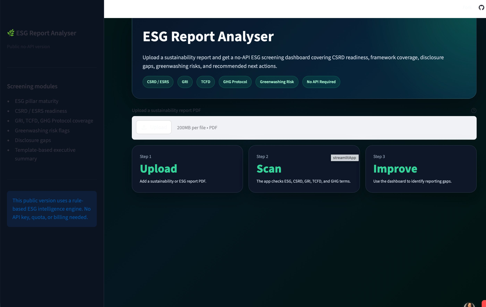

ESG Report Analyser
AI tool that ingests sustainability PDFs, extracts KPIs, flags weak or greenwashed claims, and scores reports against GRI and ESRS — turning a multi-day analyst task into a first-pass review in minutes.
Python
Claude API
LangChain
Streamlit

Screenshotesg-analyzer.png